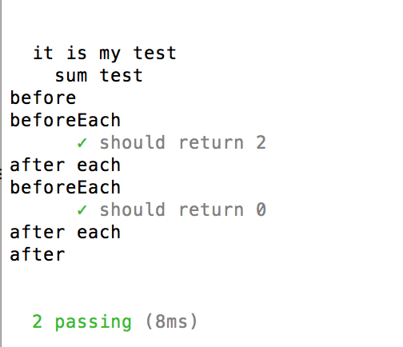

mocha是一款功能丰富的JavaScript单元测试框架，它既可以运行在后台的nodejs环境中，也可以运行在前端的浏览器环境中。mocha不仅可以测试同步代表，也可以测试异步代码。使用mocha，我们只需要专注于单元测试本身，然后让mocha自动运行所有的测试用例，并给出测试结果。
- 1 安装
全局安装的命令为：1npm install mocha -g
或者在当前项目下安装：
- 2 在服务器端使用
在后端nodejs环境中的用法比较简单123mpn install mochamkdir testcd test&&touch test.js
然后在test.js中编写测试用例
mocha默认会运行项目下test文件夹中的*.js文件，因此最好不要随意变动文件夹。一种启动脚本的方式是切换到项目根目录下，执行node_modeules中的脚本。
另外一种方式是在package.json中添加npm命令。
然后在项目根目录下执行以下命令：
- 3 在浏览器端使用
在根项目中新建一个test文件夹，然后使用mocha init命令来生成一个在浏览器中的测试框架。123456mkdir testmocha inint test```可以在test文件夹下看到生成的一些html样式和js脚本，index.html是用来显示运行结果的，test.js是空白的文件，用来编写自己的测试用例。首先我们在index.html中加入chai断言库。```vim``<script src="http://chaijs.com/chai.js"></script>
然后在test.js中加入我们的测试代码：
- 4 mocha提供的钩子函数
为了方便在测试前初始化资源，测试之后释放资源，mocha提供了before，after，beforeEach和afterEach来实现功能。before,after命令在所有测试用例执行和结束之后执行，beforEach和afterEach在每个测试用例开始和结束之后结束命令。例如：1234567891011121314151617181920212223describe('sum test',function(){before(function(){console.log("before");});after(function(){console.log('after');});beforeEach(function(){console.log('beforeEach');});afterEach(function(){console.log('after each');});it('should return 2',function(){asserts.equal(sum(1,1),2);});it('should return 0',function(){asserts.equal(sum(-1,1),2);});});});
运行之后就会看到，在每个test执行之前和之后都会执行beforeEach和afterEach，在一组test执行之前和后都会执行before（）和after（）。

- 5 参考地址：http://mochajs.org